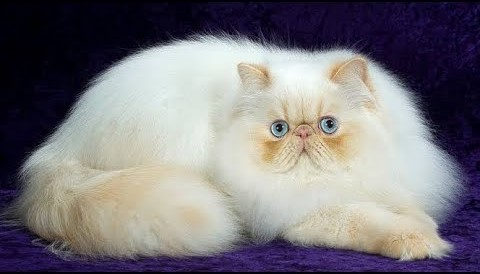
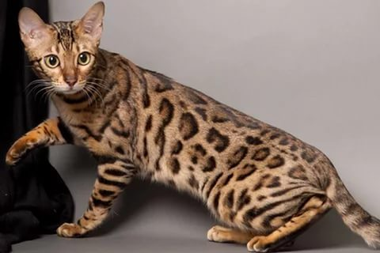
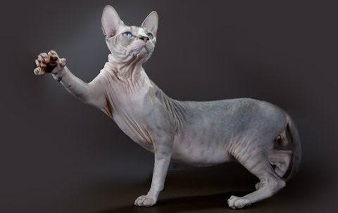

Британская короткошерстная
Британская короткошерстная кошка - одна из старейших пород в мире. Они характеризуются короткой, плотной шерстью и круглой головой. Британцы обладают спокойным и уравновешенным характером. Они являются прекрасными компаньонами.
Мейн-кун
Мейн-кун - одна из крупнейших пород кошек в мире. Они имеют мощное телосложение, длинный мех и характерную «мраморную» окраску. Мейн-кун - дружелюбные и ласковые кошки, идеальные для семей.
Сиамская
Сиамские кошки известны своими голосами и яркой окраской. У них ярко-синие глаза и тонкая, узкая мордочка. Сиамцы активны и коммуникабельны, всегда готовы к общению.Кошки из сиамо-ориентальной группы умеют пользоваться своими голосовыми связками, меняя тональность и высоту звука для выражения своих требований и чувств. Легко поддаются дрессировке.
Персидская
Персидские кошки - это изящные и грациозные создания с длинной, густой шерстью и круглой головой. Они имеют спокойный характер и обожают уют и тишину.В целом кошки этой породы довольно своенравны и упрямы. При этом они довольно уравновешены. Они не склонны к активной агрессии, и хотя могут за себя постоять, чаще просто избегают контактов с теми, кто им не нравится. Иногда могут мстить.

Бенгальская
Бенгальские кошки имеют потрясающую мраморную окраску и диковинный внешний вид, напоминающий леопарда. Они активны и игривы, часто обладают характером джунглей.У бенгалов хорошо развит охотничий инстинкт. В любом возрасте они признают игры «на охоту» — гонки за мячами и игрушками, ловлю махалок, погони и преследования. Хорошо живут в стае. Быстро дичают при вольерном содержании. При воспитании котят очень важно приучать их к рукам, иначе они могут вырасти диковатыми.

Сфинкс
Сфинксы известны отсутствием шерсти и обнаженной кожей, что делает их уникальными. Из-за отсутствия шерсти Сфинксы требуют особого ухода и частого тепла. Они обладают очень ласковым и дружелюбным характером.
